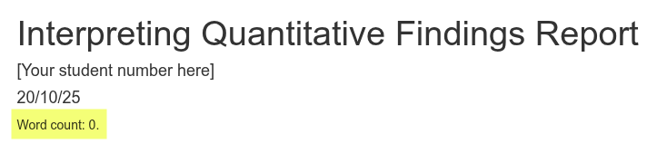

Interpretive Report Q&A
Please find below answers to questions about the summitive interpreting quantitative findings report assessment. For FAQ about R issues in relation to the summative assessment, please see the separate R Issues FAQ page.
Please get in touch if you have any other questions or where any of the answers below are unclear.
What is the process for starting the report in R? Can we have an outline?
Please see the Setup Assessment Projects page in the Assessments section of the Lab Workbook. It provides details for how to create a Posit Cloud project for the interpretive report from a template we provide. The template project includes an R Markdown file with an advised outline, suggested word counts for each section, and code-blocks for installing/loading packages, reading in the dataset, and producing the regression results table. You will need to create additional code chunks for any tables and visualisations you include as part of your interpretive report.
Time will be made available during Lab 11 to create a Posit Cloud project for the summative assessment, if you have not done so already. This lab will also provide opportunity to discuss the assessment with your lab tutors.
How will everyone’s research differ if the variables in the assignment are the same?
Whilst the variables included in the model are the same, there are a number of things that will make your report different to others. Critically, what is key within quantitative methods is providing context and narrative to the data and analysis:
The introduction will differ based on your research topic, literature used to provide context, research question, and hypothesis/hypotheses. Your hypothesis/hypotheses will determine which variable/variables in the model are being treated as independent, making the others control variables. Based on this, there may be particular aspects you may want to focus on in more detail within the ‘Data and Method’ section. Then, central to the report is ‘interpreting’ the regression results across the ‘Results and Discussion’ and ‘Conclusion’ sections. Importantly, this requires not just reporting the numbers, but being able to contextualise the statistical results, drawing out what their implications are for your hypothesis and research question, the broader literature, and future research. Similarly, the guidance on How to write my research report? advises to provide and discuss visualisations of any interesting relationships in the ‘Results and Discussion’ section, where again your research question and hypothesis/hypotheses will influence what these are and how they are discussed.
How would you form a rationale when you cannot find a research gap
As covered in online lectures, some contemporary research design textbooks argue that we should speak more of “research contribution” and not just a “research gap”. What is it that your research is adding to the existing literature? In practice, research contribution/gap is more a different way to frame essentially the same thing, but initially thinking of ‘contribution’ can be a helpful way to identify a ‘gap’.
For example, existing research might show a relation between marital status and reported well-being. However, this research may be 20+ years old where changes in societal views of marriage, ability of households to live on a single income, policies that benefit married couples, etc may raise questions about whether that relationship still exists, and even if it does are differences in well-being still the same. Alternatively, the research showing the relation may predominantly be in countries with strong cultural views towards marriage, policies that strongly benefit married couples, etc, which raises questions about whether the relationship still holds in countries without these. Similarly, and importantly, even where your research is in a country with similar characteristics to the countries predominantly used, you are still making a contribution by researching whether the relationship still holds elsewhere. If it does, this further helps solidify the evidence and theory, if it doesn’t it raises questions about what current understandings of the relationship may be leaving out.
With each of these you would be ‘contributing’ new research that addresses a ‘gap’. The first, contributing new research to address the gap in more contemporary research, using any key changes over time to further justify its importance. The second, contributing research from another country to address the gap created by most research on the topic predominantly being within specific countries, using any key differences between the countries to further justify its importance. The third, is more subtle, contributing research from another similar country to similarly address the gap from research predominantly being within specific countries, using the similar but under-researched country to justify seeing whether the relation still holds.
Note, those are just three examples, there are a plethora of other potential contributions you could be making to address a gap in the literature.
Are there any parts where people often drop marks but is an easy fix?
A few areas that influence the grade that are relatively easy fixes:
- Not citing any literature. Ensure to cite research literature to provide context to your research question, when interpreting findings, and in the conclusion. Similarly, cite relevant methods literature to support your discussion of data and method and interpretation of findings.
- Not providing a clear research question and/or hypothesis. As covered above, key to interpreting findings is going beyond just the numbers. To effectively do that you need to have a clear research question and hypothesis/hypotheses. Fogarty chapter 6 “Developing Hypotheses” provides a good range of examples for how to clearly phrase hypotheses.
- Not including any additional tables or graphs. The template includes the code for creating the regression results table, but you should also provide an appropriate visualisation of the dependent variable, table of descriptive statistics for variables included in the model, and appropriate visualisations of any particularly interesting relationships in the model.
- Not interpreting all or part of the regression results table. Interpreting the regression results table is a critical part of the assignment. The guidance for the Results and Discussion provides information on what you should be covering in doing so. Importantly, this includes the model fit statistics, which is the part that most often gets missed. The in-person lectures in Week 9 (evaluating coefficient information) and Week 10 (model evaluation) will cover these in more detail.
How much secondary literature should we include? i.e. referencing the key reading
We are not looking for a huge amount. For the literature on your research topic, at least 3-4 texts would be acceptable. For quantitative methods literature, at least citing Fogarty where relevant would be acceptable, though it would be good to cite 1-2+ other methods text as relevant as well. Also, ensure to cite the NILT documentation where relevant, such as in the ‘Data and Methods’ section.
What does the variable “rsuper” signify? What does it mean by “Supervisor”?
Excellent question. It is always key to consider what it is that variables actually measure and represent. As covered in the online lectures, it is good research practice to provide documentation alongside datasets, which the NILT project does.
Within the main questionnaire, Q12 on page 41 is the question used for the “rsuper” variable:
So, the phrasing of the question would be inclusive of what would also be called ‘line management’ rather than limited to people with ‘supervisor’ in their job title or description.
Important to note as well is the “ASK IF EMPLOYEE” routing information. This means the “rsuper” question Q12 was only asked if the respondent answered “Employee” to Q11. As a result, anyone who answered “Self-employed” to Q11 were not asked Q12, the question for the rsuper variable, resulting in ‘NA’ (i.e. missing) values:
To what extent is collaborative work allowed for the project?
Your interpretive report should remain an ‘independent piece of work’. It is perfectly OK to help each other solve R errors and general coding issues, but your research question, hypothesis/hypotheses, and interpretation should all remain your own independent work. Decisions on what tables and figures to include should also remain your own. It is OK to help someone who is stuck figuring out what code they need to add a title to their graph, but you should not be writing the code for them nor producing the exact same tables and figures throughout, which would constitute plagiarism. Note, emphasis here is on ‘exact’ and ‘throughout’ that would suggest the report is not your own independent work, we recognise that there will be general similarities with some tables and graphs.
Are tables/figures/code included in the word count?
Tables, figures, and code are not included in the word count. The project template is setup with a “word count add-in”, that will add a word count for you at the top of your knitted document. In other words, you will need to knit your file and view the knitted HTML file to see the word count.
This is how it looks within the R Markdown file:

And, this is what it then looks like within the knitted HTML file:

As can see, despite the project template’s R Markdown file having over 300 words and the knitted HTML having a regression results table that contains 50+ words, none of the code nor table/figure text is included within the actual word count.
The ‘- 14’ in the code is so the words in “Word count:” and each of the headers - “Introduction”, “Data and method”, etc - are substracted from the calculated word count. Ensure to update this number to exclude your bibliography from the word count. For example, if your bibliography is 184 words then change the code to “wordcountaddin::word_count(”Summative-template.Rmd”) - 198”.
For a categorical variable, if one category is statistically significant but another isn’t, can we say the variable is significant?
When modelling a categorical variable as an independent / control variable, one category is selected as the ‘reference category’, and the model tests whether each of the other values are significant in relation to it. This means the statistical significance of each category is evaluated independently of the others. For example, if we had a categorical variable with categories A, B, C, D and we used A as the reference category, the regression results might show that C is statistically significant, while B and D are not. We could not claim from this that the categorical variable as a whole (B, C, and D) is statistically significant, only that C is significant in relation to the reference category (A).
Can we see an interpretive report that got a good grade? The Moodle example got a C.
Within the University of Glasgow’s Code of Assessment, a C is a good grade. A = Excellent, B = Very Good, C = Good, D = Satisfactory.
Due to data protection regulations, in order to share previous student work on Moodle the university requires us to have students sign a form providing permission. As this is an honours level course and we need to wait until after the Exam Board takes place before approaching students, we tend to have a very low response rate to such requests.